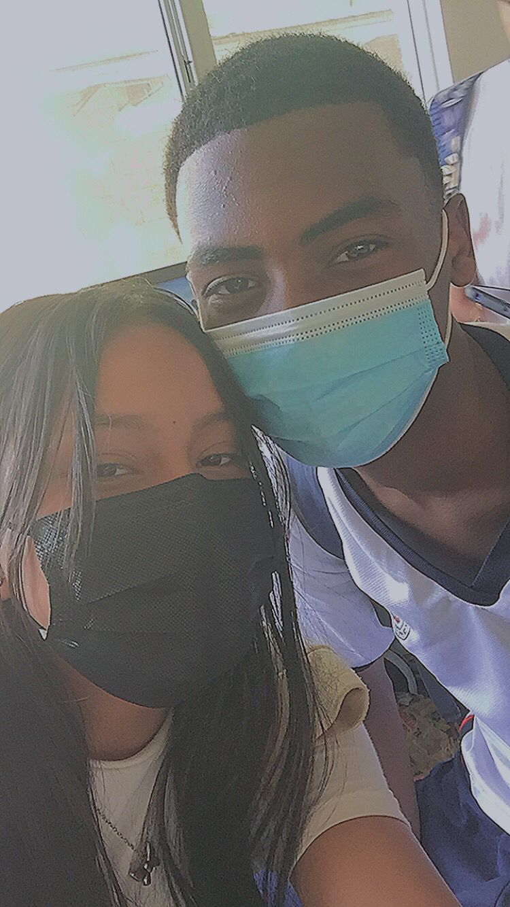
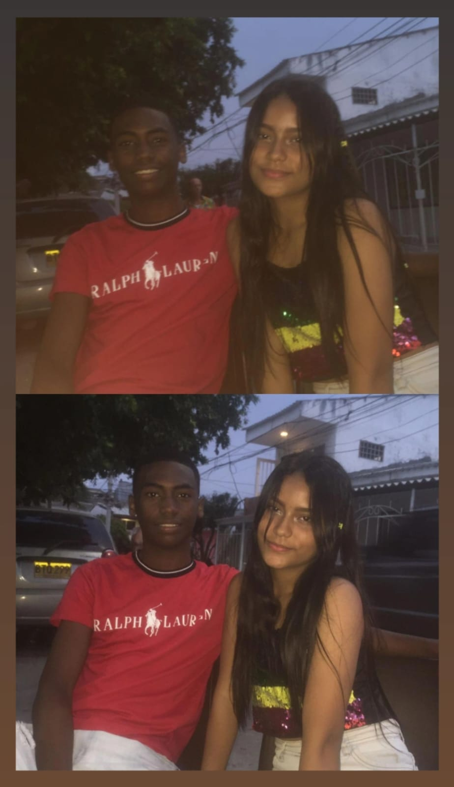
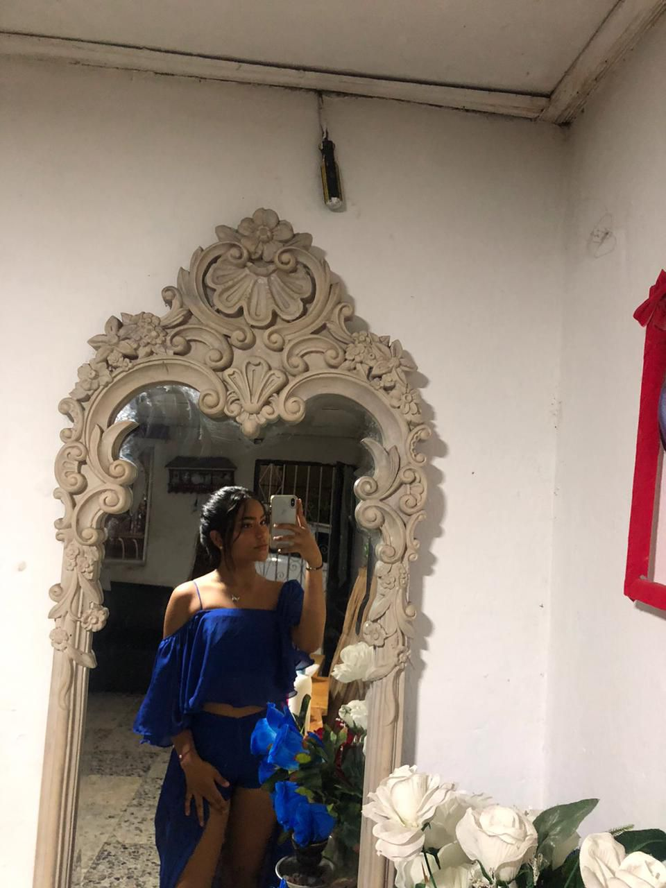

pagina para my girl
pagina web my girl:

Donde empezó todo,quien diria que hoy 4 años despues estariamos juntos y amandonos gracias a ese pequeño evento canonico en nuestra relación o así me gusta llamarlo a mi.
y es que desde aquel momento sin darme cuenta conocia a la persona más especial en mi vida,la luz que llegó a iluminar mis dias
eso que a dia de hoy esta convertido en mi felicidad entera y razon por la cual vivir y no rendirme nunca.Gracias a Dios fui ese
dia a la escuela JAJA,no quiero ni imaginar que hubiese sido mi vida sin ese momento gracias por llegar a mi vida y regalarle la
felicidad.
¡BENDITO 28!

Cuando te volviste My Girl ese preciosa niña que me encanto desde la primera vez que la vi con preciosos ojos
y hermoso cabello,desde el bendito 28/03/22 nos hemos amado cuidado y respetado como una pareja ejemplar te
amo demasiadote My Girl.
bueno ya no me extiendome más con el resumen continuemos con la mejor parte...
Sección principal:
MI GIRL

La verdad me resulta imposible no contemplar tan maravillosa creación divina echa por Dios eres lo más
preciosa,hermoso y sublime que mis ojos hayan visto jamas,a DIOS le pido me regale salud y vida para
poder disfrutar de tan precioso angel que envio a mi vida al maximo.Cada latido de mi corazón lleva tu
nombre en un susurro silencioso que solo el universo comprende. Eres el sueño del que nunca quiero
despertar, la melodía que calma mi alma en los días más tormentosos. Mi amor por ti es infinito como el
cielo estrellado y eterno como las olas del mar.
Es que me encanta todo de ti mujeeeeer! solo basta observar desde el inicio de la raiz de tu hermoso cabello,
tus claros y preciosos ojos deliniados,tus jugosos y tentadores labios.Cada detalle de ti es una obra de arte
que memorizo con devoción, como si mi alma supiera que fue creada solo para amarte. Eres la poesía que mis
manos nunca podrán escribir pero que mi corazón recita en cada latido. No existe rincón en ti que no despierte
en mí una admiración profunda y un amor que solo creece constantemente.

Más allá de como me encantas fisicamente quiero resaltar lo fantastica que de verdad eres como mujer,y es que
no dejo de sentir admiración por el gigantesco corazón que tienes mi niña no deja de sorprenderme lo genuiuna
y pura que eres no hay ni pizca de maldad en tus intenciones y todo lo haces con ese amor y energia que te
hacen tan diferente al resto.Eres el reflejo más hermoso de la bondad que existe en este mundo, un alma que
ilumina con su simple existencia. Tu esencia pura y radiante transforma cada momento ordinario en algo
extraordinario, y cada día a tu lado es un recordatorio de que el amor verdadero sí existe. Eres, sin duda,
el milagro más tierno que la vida me ha regalado.